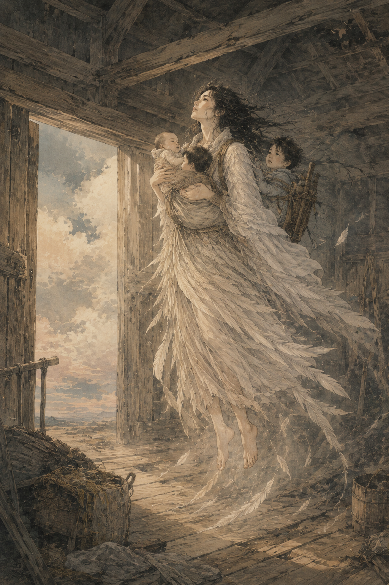
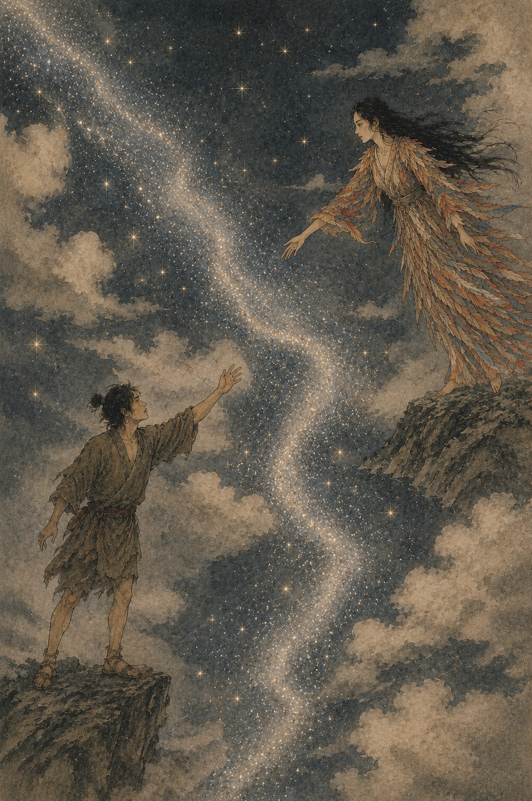

Небесная дева
В одной деревне жил молодой крестьянин по имени Микэран. Каждый день он трудился в поле и рубил дрова в горах.
Однажды он отправился в горы вместе с односельчанами. Пока они отдыхали и пили воду из горной речки, Микэран решил искупаться отдельно и пошёл к верховью реки, куда люди обычно не заходили. Там была широкая чистая заводь.
Сбросив одежду, он уже собирался нырнуть, как вдруг заметил на ветке прибрежной сосны прекрасную одежду из птичьих перьев. «Вот диво!» — подумал Микэран и снял одежду с ветки.
В тот же миг из глубины заводи выплыла обнажённая девушка и стала умолять его жалобным голосом:

— Верни мне мою одежду из перьев. Ведь для человека она бесполезна.
Но Микэран молча смотрел на неё. Тогда девушка призналась:
— Я небесная фея и лишь изредка спускаюсь на землю, чтобы искупаться в этой заводи. Если я не надену этой одежды, то не смогу вернуться на небо.
Микэран же предложил ей остаться и жить с ним на земле в любви и дружбе. Небесная дева молила его вернуть одежду, но он отказался, боясь, что она улетит.
Опечаленная, но не имея возможности вернуться на небо, небесная фея поневоле пошла с Микэраном в его селение.
Прошло семь лет, у них родилось трое детей. Но жена всё это время тосковала по небу и искала свою одежду из перьев, которую муж где-то спрятал.
Однажды Микэран ушёл на рыбалку, а небесная фея пошла к речке по воду. Когда она возвращалась, то услышала колыбельную песню, которую пел её пятилетний сын, укачивая младенца. В песне говорилось о том, что отец скоро вернётся и найдёт одежду из перьев в высоком амбаре на четырёх и шести столбах.
Небесная фея поспешила в амбар, отыскала свою чудесную одежду, надела её, привязала к спине семилетнего сына, пятилетнего положила за пазуху, а младенца прижала к груди — и взмыла в небо.

Но, пролетая между облаками, она уронила младенца, и он упал на землю.
Вернувшись, Микэран увидел пустой дом и открытую дверь амбара. У очага он нашёл в бамбуковой дудке письмо от жены. В нём она велела ему собрать по тысяче деревянных и соломенных сандалий, закопать их в землю и посадить бамбук. Когда бамбук дорастёт до неба, Микэран сможет взобраться по нему к ней.
Микэрану удалось собрать только 999 пар каждого вида. Он закопал их и посадил бамбук. Через три года бамбук вырос почти до самого неба, и Микэран начал взбираться по нему. Но ветви на вершине не доставали до неба совсем чуть-чуть, и он повис, уцепившись за верхнюю ветку.
Небесная фея, заметив его, спустила ткацкий челнок, за который Микэран ухватился, и она втащила его на небо.
Мать небесной девы приняла Микэрана ласково, но отец — Небесный правитель — встретил зятя со злобой и стал давать ему невыполнимые задания. Однако жена каждый раз помогала мужу, и он справлялся. Но однажды Небесный правитель задал ему коварную задачу: разрезать три огромные тыквы. Жена знаками пыталась предупредить мужа, что нужно резать поперёк, но было поздно. Микэран разрезал тыквы вдоль, и из них хлынули воды, которые унесли его прочь. Небесная дева долго молила отца вернуть ей мужа, и он смилостивился, дозволив им видеться лишь один раз в году.
С тех пор на небе видна серебряная Небесная река, которая разделяет Микэрана и Небесную деву. На её берегах сияют две звезды — Пастух и Ткачиха.
